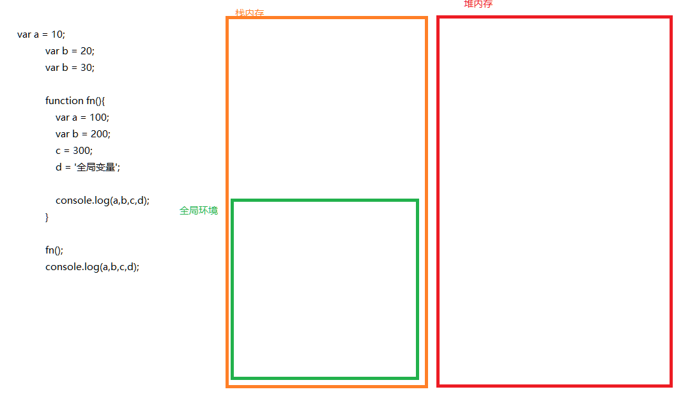
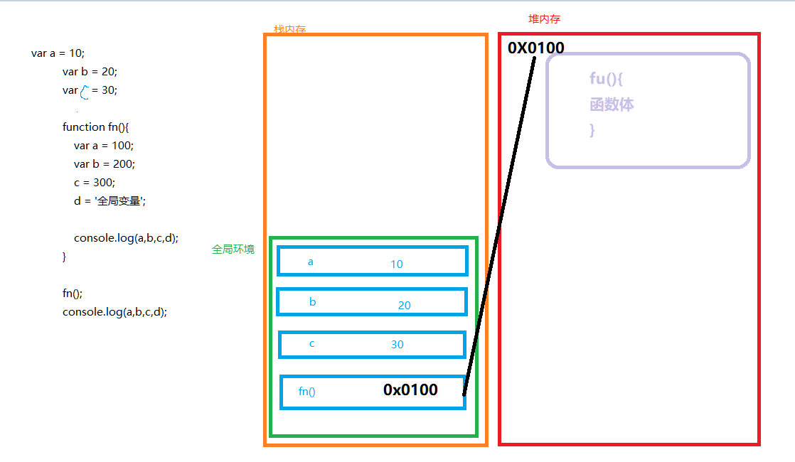
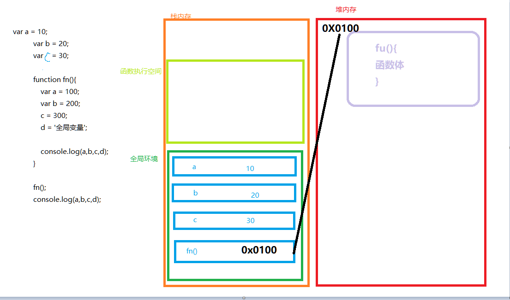
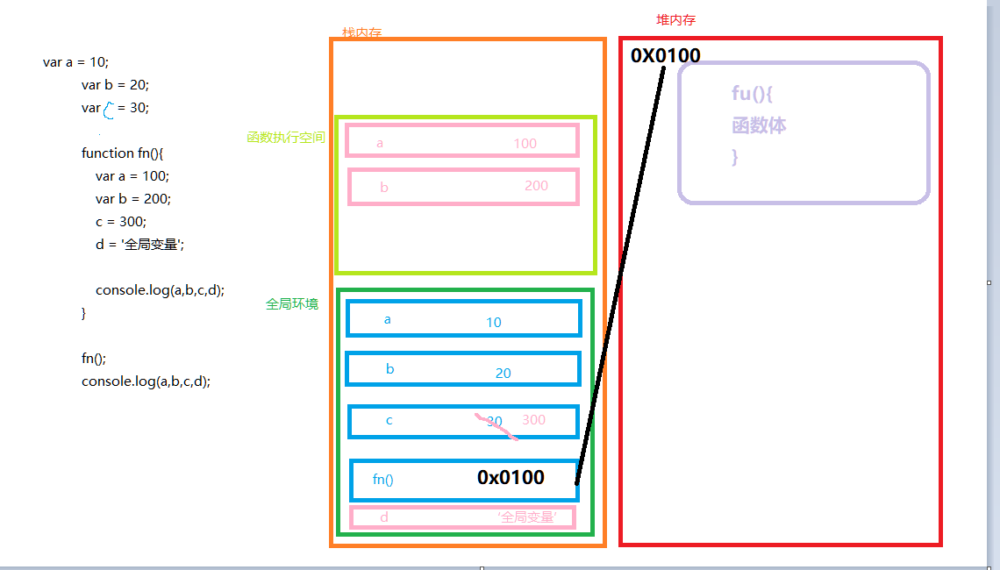
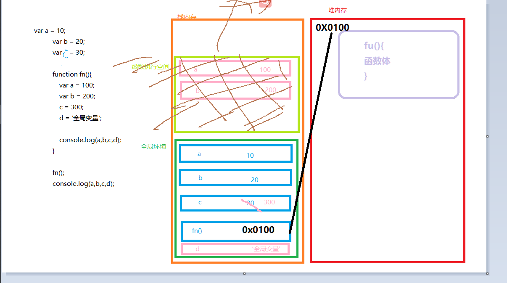
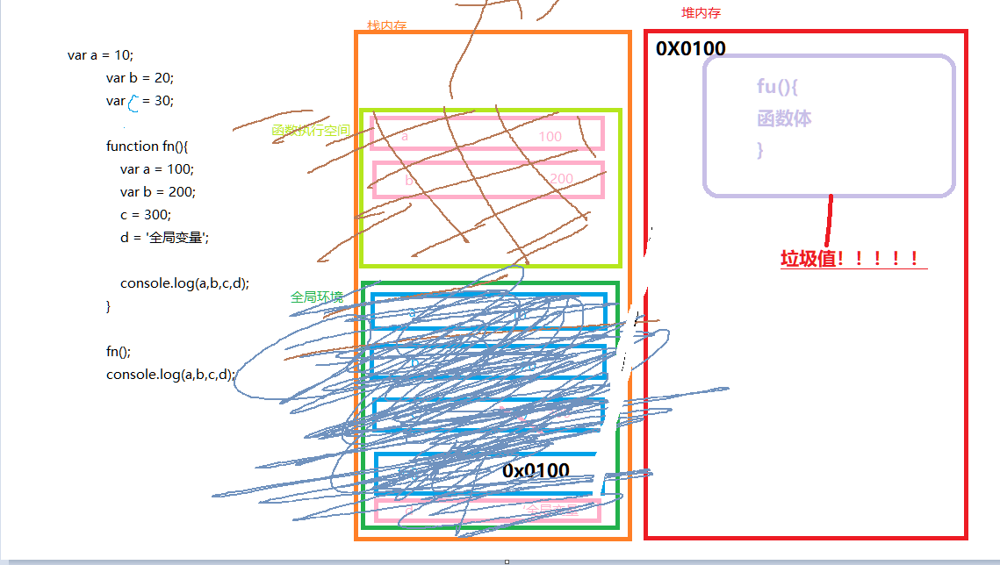

第一步:进入script 系统在栈内存中 分配一个全局执行环境
程序开始执行,设立了三个全局变量abc,且都是基本数据类型,在栈内存的全局环境中开辟三个内存存入 abc和其值
遇到函数声明,在栈内存中为函数fn()分配空间,在堆内存中存入函数的实际内容(),并将函数的堆内存首地址存入栈内存中,让变量fn指向函数内容
注意,函数声明(定义)时,函数不执行,也就是不会执行里面的任何语句,只是开辟了堆内存和指向
程序继续指向,fn(),要调用fn(),调用函数前需要在栈内存开辟一个fn()专属的函数执行空间
执行fn(),在函数执行空间中,开辟内存给局部变量a,b,并且调用了全局变量c=300 ,并创建了一个全局变量D,接着打印
fn()执行完毕,函数执行空间出栈(回收),注意这里只回收栈内存的函数执行空间,而不会回收fn()变量和堆内存的内容,理解:执行环境是为了执行而生的,执行完执行环境就销毁了
打印完后,整个程序执行完毕,全局环境出栈,此时堆内存的fn()内容就成了没有指向的垃圾值 ,系统也会自动回收该垃圾值

函数开始执行到结束发生了:
1.程序一开始执行,系统创建全局环境并进行压栈,全局代码执行时依赖的就是全局环境内部数据,比如全局变量(全局变量若是基本数据类型,则值直接存入栈中,假若变量是对象数据类型,那么函数数组则在 堆内存 中开辟自己专门的空间专门存储,然后将栈内存的变量指向对应的堆内存首地址)
2.当程序碰到了函数调用(不是定义),函数比较特殊,函数本身也要执行,所以函数执行也需要创建 自己的 函数执行环境进行压栈(函数环境压栈在全局变量之上),局部变量也是在函数环境当中存在的.只有函数执行过程中,局部变量才会出现,函数执行完成后,函数环境出栈,局部变量不复存在(消亡).
3.当函数调用完成,会继续执行全局代码,所有代码执行完毕,程序结束,全局环境最后出栈,此时堆内存有可能会产生无指向的垃圾值.